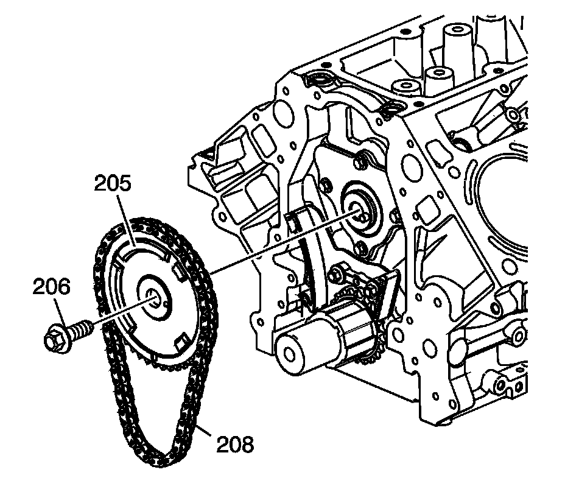
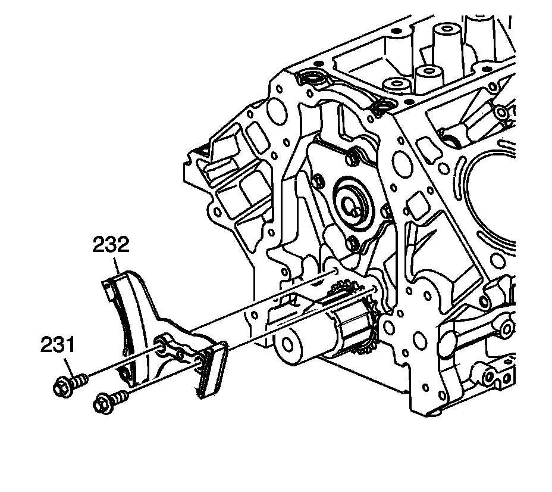
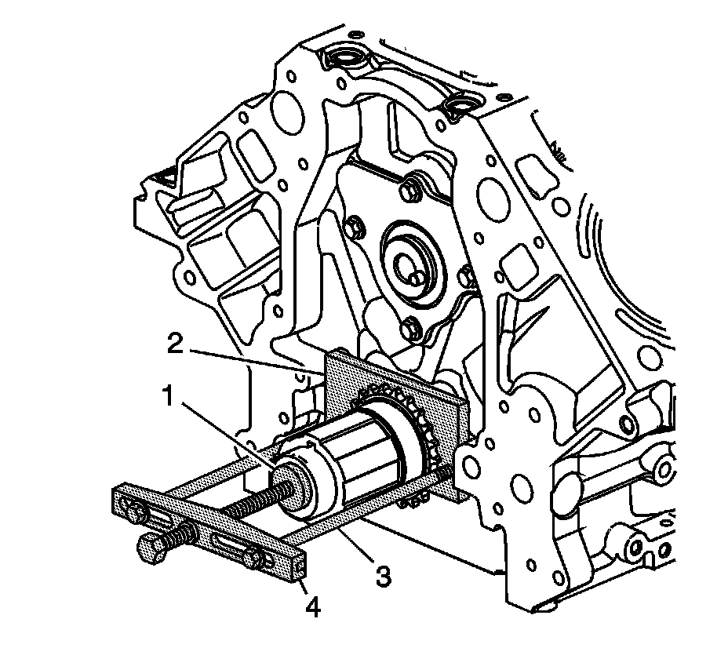

26. Timing Chain and Sprocket Removal
Timing Chain and Sprockets Removal
Tools Required
^ J 8433 Two Jaw Puller
^ J 41558 Crankshaft Sprocket Remover
^ J 41816-2 Crankshaft End Protector
^ J 42386-A Flywheel Holding Tool

Important: Do not apply threadlock to the flex plate bolts at this time.
1. Temporarily install the automatic transmission flex plate and bolts. Refer to Automatic Transmission Flex Plate Installation.

Notice: Refer to Fastener Notice.
2. Install the J 42386-A (1) and bolts. Use 1 M10 - 1.5 x 120 mm and 1 M10 - 1.5 x 45 mm bolt for proper tool operation.
Tighten the J 42386-A bolts to 50 N.m (37 lb ft).

Notice: Do not turn the crankshaft assembly after the timing chain has been removed in order to prevent damage to the piston assemblies or the valves.
3. Remove and discard the camshaft sprocket bolt (206).
4. Remove the camshaft sprocket (205) and timing chain (208).

5. Remove the bolts (231) and timing chain tensioner (232).

6. Use the J 41816-2 (1), the J 41558 (2), bolts (3), and the J 8433 (4) in order to remove the crankshaft sprocket.

7. Remove the crankshaft sprocket (207).

8. Remove the crankshaft sprocket key, as required.
9. Remove the automatic transmission flex plate and bolts.
10. Remove the J 42386-A and bolts.